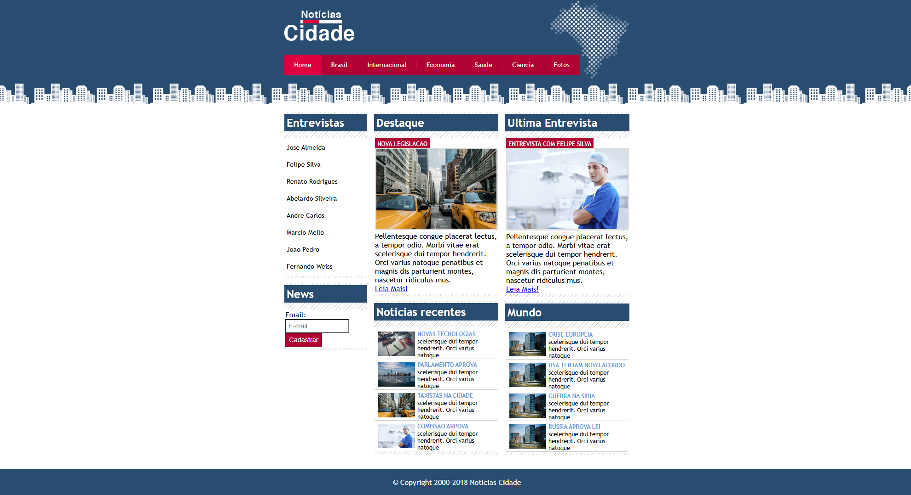
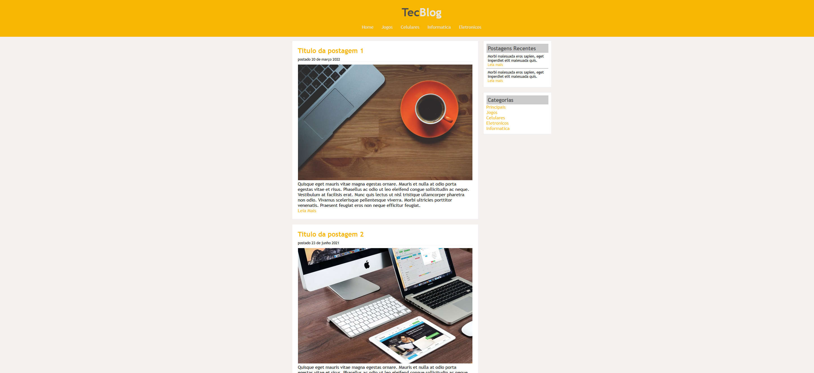
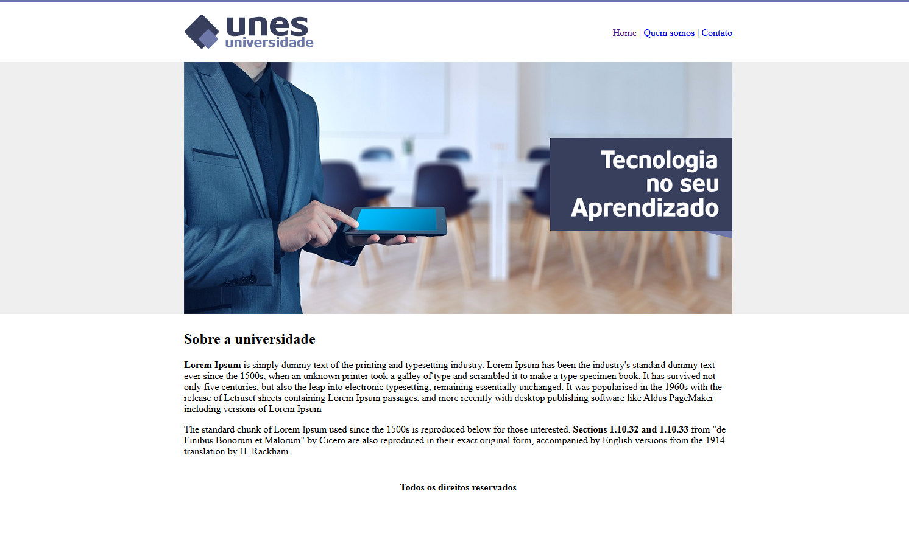

Olá, meu nome é Gustavo Atauri
desenvolvedor front-end
Hard Skills
Resumo
Me chamo Gustavo Atauri Marques Fernandes, tenho 19 anos e sou graduando em Engenharia da Computação. Sou um entusiasta da tecnologia que encontrou no desenvolvimento Front-end a forma ideal de unir lógica e criatividade.
Projetos
Projeto Jornal
O "Notícias Cidade" é um portal de notícias clássico desenvolvido para consolidar conceitos fundamentais de design web e estruturação de dados.
Ver RepositórioProjeto Tecblog
O TecBlog é um projeto de blog institucional focado na área de tecnologia, priorizando a legibilidade e facilidade de navegação.
Ver RepositórioProjeto Universidade
Interface institucional para uma universidade fictícia, com foco em hierarquia visual e estruturação HTML clara.
Ver RepositórioProjeto Login
Desenvolvimento de uma interface de login moderna e minimalista, utilizando gradientes e design focado na UX.
Ver RepositórioCertificados
Excel na Prática - Fundação Bradesco
Certificação voltada ao domínio das ferramentas essenciais do Microsoft Excel para o mercado de trabalho. O curso abrange desde a estruturação lógica de planilhas e manipulação de fórmulas complexas até a criação de gráficos dinâmicos para visualização de dados.
Visualizar PDFFundamentos de TI: Hardware e Software - Fundação Bradesco
Certificação abrangente voltada à compreensão da arquitetura de computadores e dos sistemas que os operam. O curso detalha desde a identificação e manutenção de componentes físicos (placas, memórias, processadores) até a instalação e configuração de sistemas operacionais.
Visualizar PDFSegurança em tecnologia da informação - Fundação Bradesco
Certificação voltada à compreensão dos pilares fundamentais da segurança digital: Confidencialidade, Integridade e Disponibilidade (Triade CID). O curso aborda a identificação de vulnerabilidades, gestão de riscos e as melhores práticas para a proteção de ativos de informação.
Visualizar PDFPowerPoint na Prática - Fundação Bradesco
Certificação voltada à criação de apresentações profissionais de alto impacto. O curso aborda desde o planejamento estrutural do conteúdo até a aplicação de técnicas avançadas de design, como o uso estratégico de infográficos, animações funcionais e transições que auxiliam na retenção da atenção do público.
Visualizar PDF